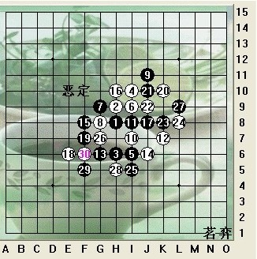

挂盘讲解的一局
#1 挂盘讲解的一局 作者：五子痴 发表时间：2009-11-16 12:26:06
大家好，我是小刀，(我是解村)在祖国60周年华诞也是中国第一届智运赛召开之际，很高兴与您相聚在成都。随着我国体育部门对体育智力活动的不断重视，五子棋不仅得以立项，有了专业赛事，而且在我们民间也普及开来.那么在这里我们先给大家介绍一下五子棋的基本知识。五子棋顾名思义，也就是连成5颗子就算赢，在国际上，也被称为“连珠”。不过，今天我们所说的五子棋下法同一般概念上我们平时游戏时下着玩的五子棋有点区别，今天介绍的五子棋也可以称为现代竞技五子棋。我们平时游戏时的五子棋规则很简单，只要任意一方率先在棋盘上纵横斜线的任意一条上连成5颗棋子就算胜，但这个在比赛中一般是不采用的。在目前比赛中比较常用的布局规则，可以概括为四句话：执黑方布局、三手可交换、五手需二打、黑方有禁手，这在国内外比赛，尤其是专业比赛中被普遍采用。说的稍微具体点，五子棋一共有26种布局，在比赛中执黑方（假先方）开局（任意选择一种布局）后，执白方可以决定是否交换，到第5手，执黑方需要在棋盘上放置2个不对称的点供白方选择，也就是我们说的五手二打，接着执白方自行拿掉一个点，然后双方才开始一人一步的行棋。而在对局过程中，由于黑棋有先行之利，所以还专门为黑棋设置了禁手，以确保对局双方的公平。所谓“禁手”就是对局过程中禁止下的那手棋，黑棋不能下的禁手包括了“三三、四四、长连”。也就是说黑棋只能通过“四三”的棋型取胜。这个布棋规则我们叫RIF规则。另外，随着棋手实力的提升，目前国际上还推出了一种新颖的布局规则，这是为高水平棋手赛事提供的，主要在国际大赛中采用，被称为山口规则，它是由日本九段棋手山口釉水积极倡议的规则，第一位棋手布局，同时提议五手打点的数量，然后第二位棋手决定是否交换；下第5手时，黑方必须提供第一位棋手在开局时所提议的五手打点数量，白方从中选择一点予以保留，然后双方依次行棋，黑棋有禁手。五子棋基本知识就简单介绍到这里，今天我给大家讲一盘2009年名人赛的对局。
首先介绍下顾炜老师。如果您了解五子棋界，那么相信对他不会陌生。顾炜八段，上海市围棋协会五子棋委员会主要负责人，上海第一代棋手和领军人物，棋风行云流水，也是上海的棋王，战绩颇多。
对手是贺茂雪--他是日本新生代高手，六段，和日本另一位新生代代表人物冈部宽八段差不多年纪，获得过2007年世界个人锦标赛B组冠军，曾经连续两次零封目前日本在位名人长谷川一人，日本连珠界风头正健的年轻棋手。
本局为瑞星，顾炜黑棋2打，对手交换。根据目前的研究，瑞星执黑先行还是相对好下一些。.
白方选择了实战较为稳妥的12手，13手这里大概有这么几种常见下法，J9个人认为最强，J8也是这2年比较流行的变化。实战的13是瑞星比较老的定式.
以上为瑞星大定，29手黑棋变招了。不变的化29=F5，我们看看不变的简单图

那么30挡了活三
#2 Re:挂盘讲解的一局 作者：怪 发表时间：2009-11-16 18:48:10
图片背景的是什么？
红茶蛋糕？
［ 茗弈小刀 于 2009-11-17 10:31:01 时花20金币送鲜花一朵］
#3 Re:挂盘讲解的一局 作者：香雪美景 发表时间：2009-11-16 19:00:03


［ 茗弈小刀 于 2009-11-17 10:31:15 时花20金币送鲜花一朵］
#4 Re:挂盘讲解的一局 作者：索非亚 发表时间：2009-11-16 19:47:08
［ 茗弈小刀 于 2009-11-17 10:31:30 时花20金币送鲜花一朵］
#5 Re:挂盘讲解的一局 作者：不再捣乱 发表时间：2009-11-17 15:49:57
很仔细分析得,可惜没金币送花,先欠着罢,［ lfzxdh 于 2009-11-17 21:41:41 时花20金币送鲜花一朵］